Parte Primera:
Arte de la Lengua General de Chile.
Calepino Chileno-Hispano en Febrés (1764), con un menú que permite acceder a las entradas.
Capítulo 1: Pronuciación
 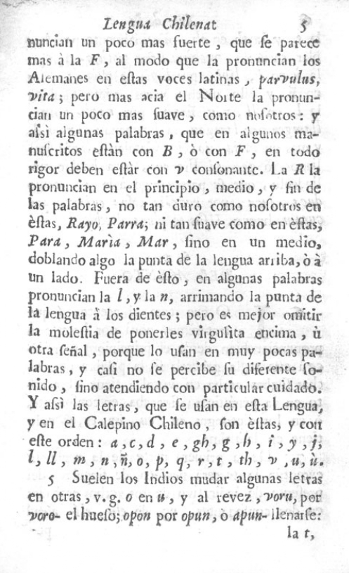
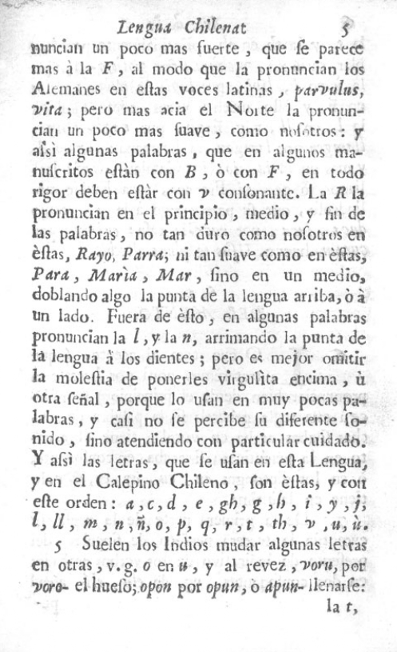
Capítulo 2: Declinación
Capítulo 3: Conjugación


 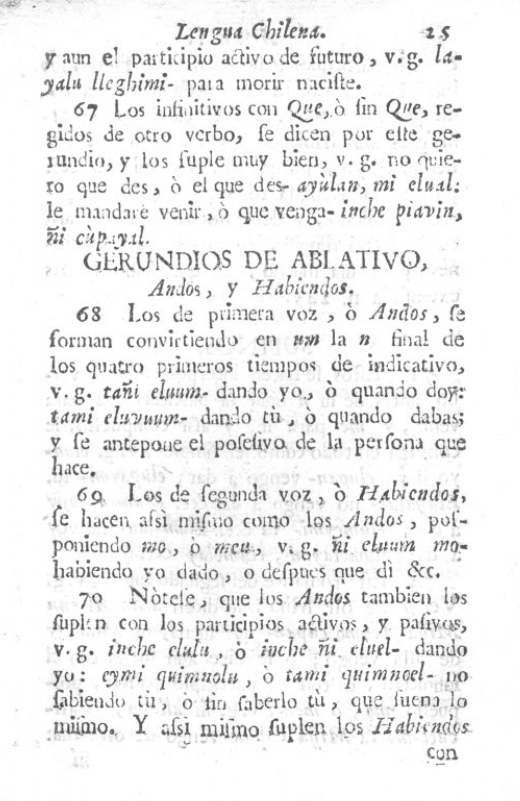
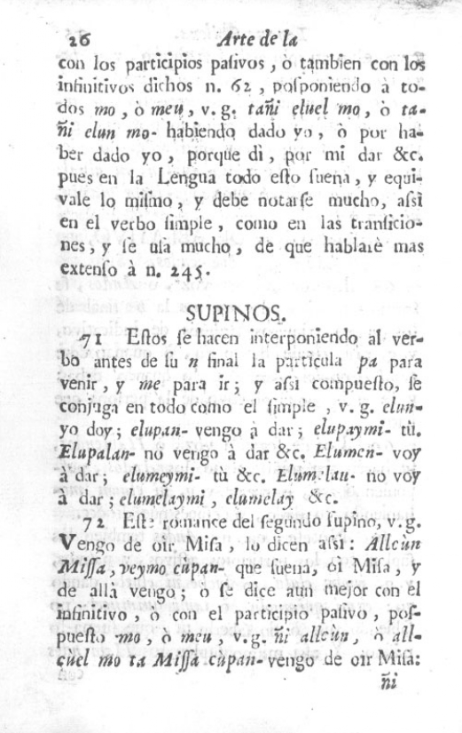
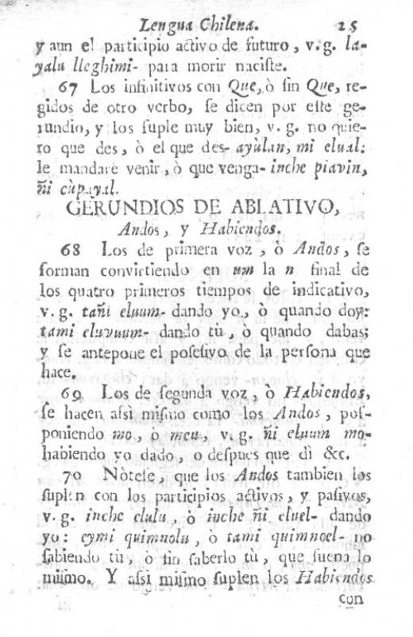
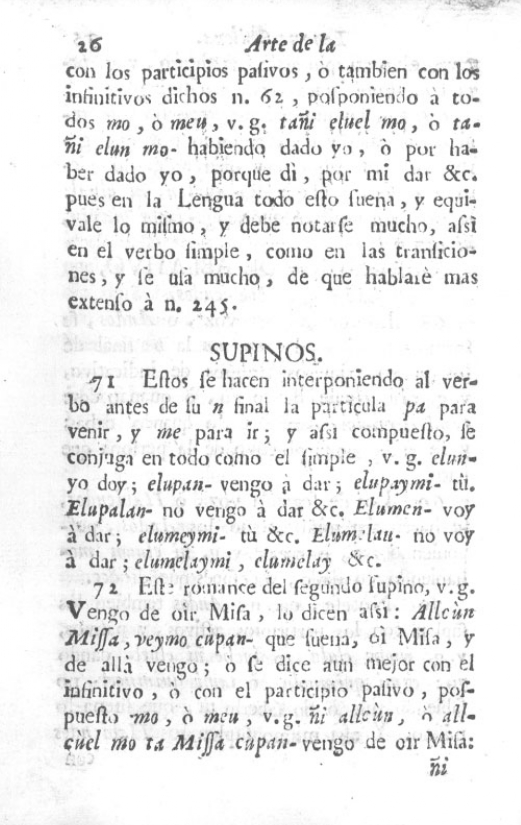
Capítulo 4: De las transiciones
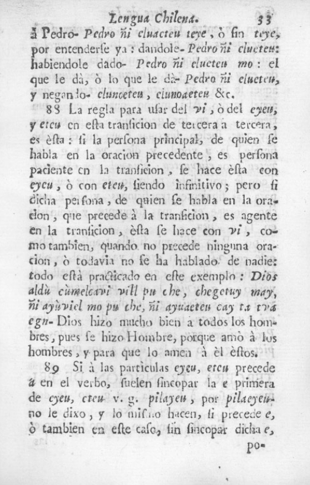 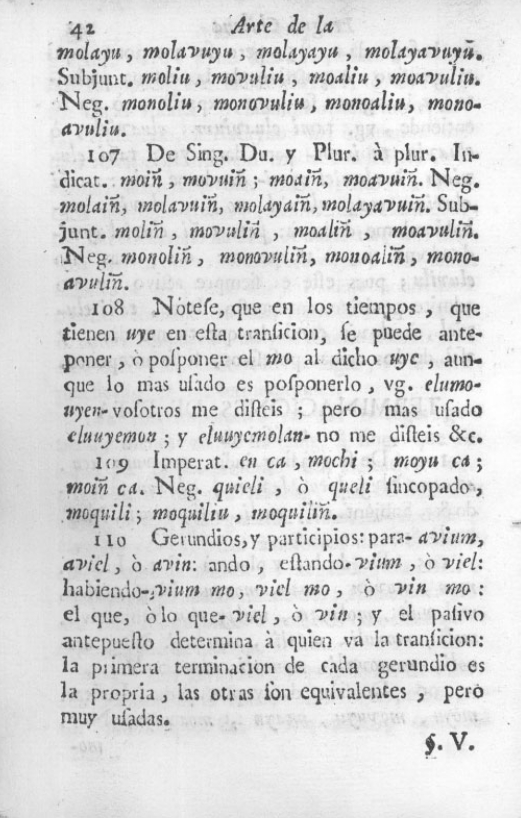Capítulo 5: Reglas para la construcción y otras
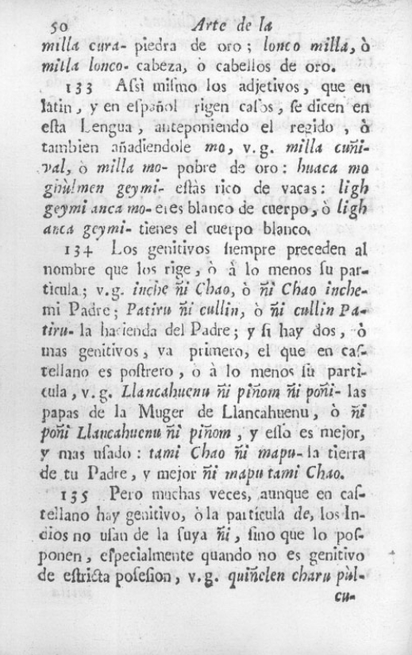Capítulo 6: De las partículas
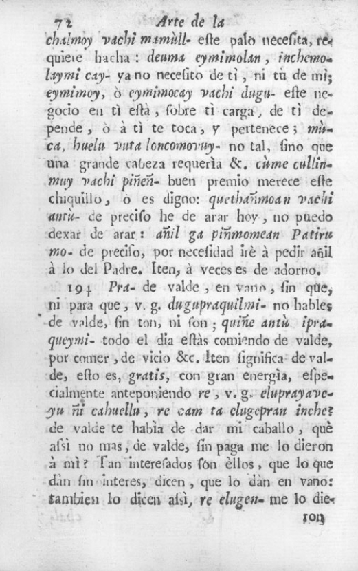 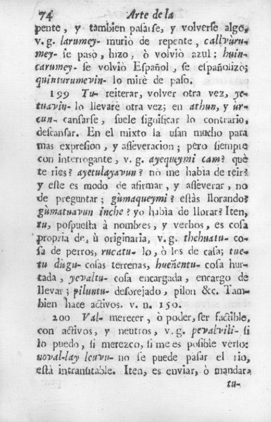Capítulo 7: De los nombres numerales, de Tiempo, Medidas y Parentescos
Capítulo 8: Último de las demás partículas de las Oración, Coyaghtunes, Equivalencias y Frases

 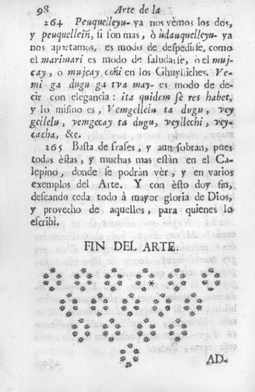
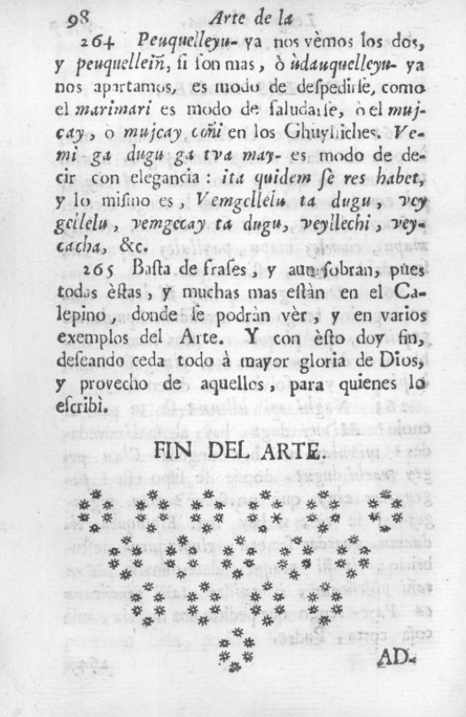
Dugulun - Diálogo entre dos caciques
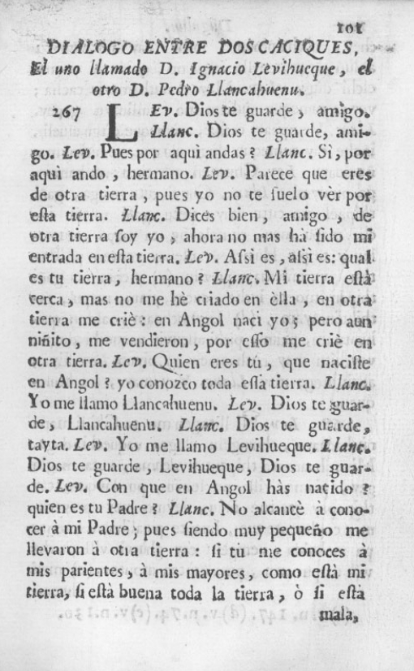 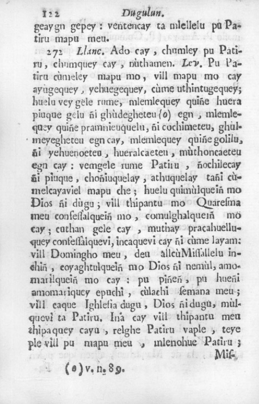
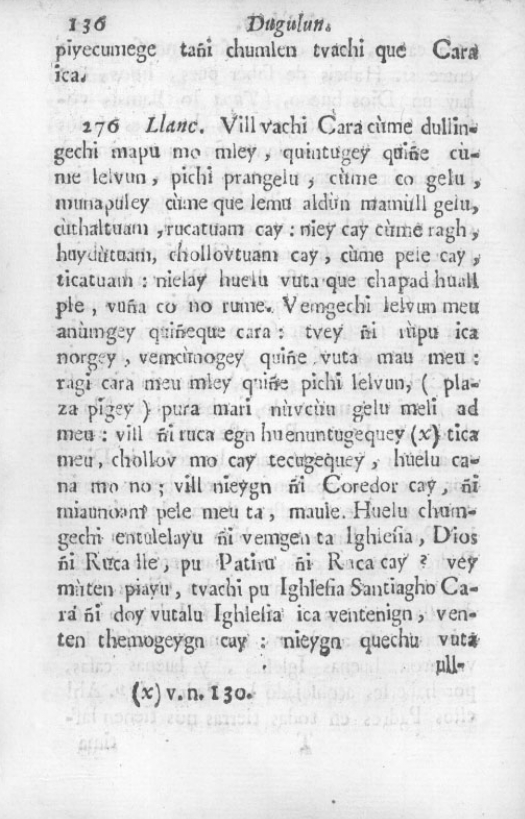
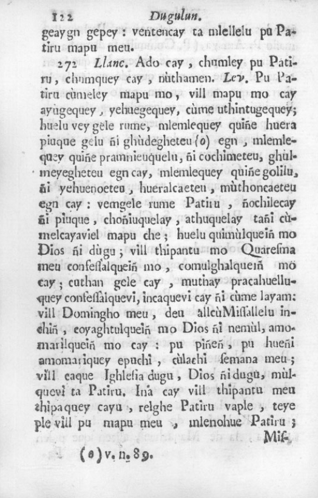
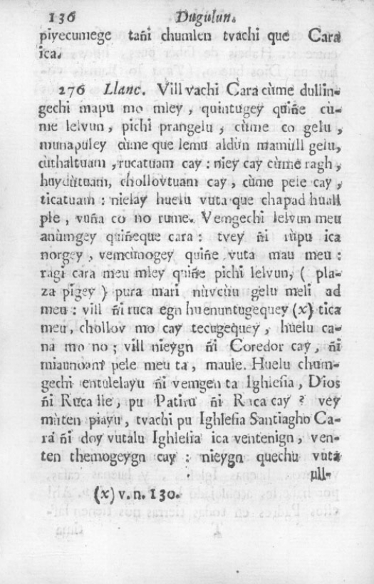

Coyaghtun
Breve Diccionario